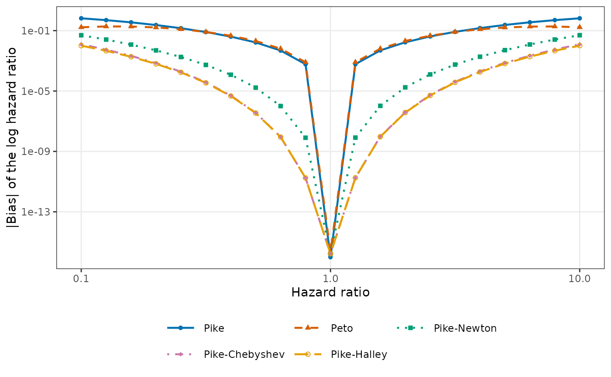
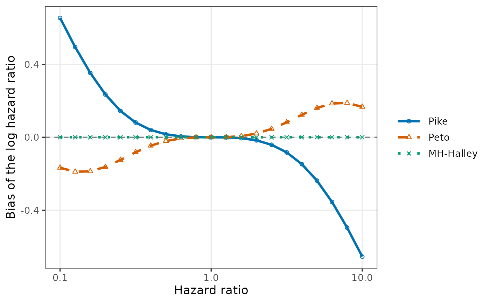

Plots the large-sample bias of the log hazard ratio estimators computed by
LimitHR against the true hazard ratio with ggplot2,
on a logarithmic horizontal axis, with one line per method.
Usage
# S3 method for class 'LimitHR'
plot(
x,
methods = c("Pike", "Peto", "Pike_Newton", "Pike_Chebyshev", "Pike_Halley"),
scale = c("abs", "signed"),
labels = NULL,
col = NULL,
shape = c(16, 17, 15, 18, 1, 2, 0, 5),
size = 1.5,
linetype = c("solid", "dashed", "dotted", "dotdash", "longdash", "twodash"),
linewidth = 0.8,
base_size = 11,
legend_pos = "bottom",
legend_ncol = NULL,
xlab = "Hazard ratio",
ylab = NULL,
main = NULL,
xlim = NULL,
ylim = NULL,
floor = 1e-16,
...
)Arguments
- x
An object of class
"LimitHR"returned byLimitHR().- methods
Methods to plot, in the order of the legend. Default: the methods whose limit differs from the true value,
"Pike","Peto","Pike_Newton","Pike_Chebyshev", and"Pike_Halley".- scale
"abs"(default) for the absolute bias on a logarithmic vertical axis, or"signed"for the bias on a linear axis with a dashed line at 0.- labels
Labels of the methods in the legend, one per method of
methods. DefaultNULL: the names of the methods with underscores replaced by hyphens, such as"Pike-Halley".- col
Colors of the methods, recycled. Default
NULL(the Okabe-Ito palette).- shape
Point shapes of the methods, with the numbers of
pchof base graphics, recycled. Defaultc(16, 17, 15, 18, 1, 2, 0, 5)(filled circle, triangle, square, and diamond, then the open ones), so that methods with nearly equal values remain distinguishable.- size
Size of the points. Default 1.5.
- linetype
Line types of the methods, recycled. Default
c("solid", "dashed", "dotted", "dotdash", "longdash", "twodash").- linewidth
Width of the lines. Default 0.8.
- base_size
Base font size in points, as in
ggplot2::theme_bw(). Default 11.- legend_pos
Position of the legend:
"bottom"(default),"top","right", or"left"(outside the plot panel),"none", or a numeric vectorc(x, y)with elements between 0 and 1 for a position inside the panel (c(1, 1)is the top right corner).- legend_ncol
Number of columns of the legend, filled row by row in the order of the methods. Default
NULL: at most 3 for a legend at the bottom or top, and 1 otherwise.- xlab, ylab, main
Axis titles and main title.
ylab = NULLgives a title that describesscale.- xlim, ylim
Limits of the axes, two increasing numbers (positive on a logarithmic axis: always for
xlim, and forylimwithscale = "abs"). DefaultNULL(the range of the values).- floor
Smallest absolute bias shown with
scale = "abs", a positive number; smaller values (including 0 at a hazard ratio of 1) are drawn atfloor. Default1e-16.- ...
Not used.
Value
A ggplot object. It is drawn when it is printed, which
happens automatically at the top level; inside functions and loops, call
print() or save it with ggplot2::ggsave(). It can be
modified further with ggplot2.
Examples
lim <- LimitHR(HR = exp(seq(log(0.1), log(10), length.out = 21)),
hazard_C = log(2) / 18, n_T = 100, n_C = 100, a = 12,
E = 160)
plot(lim)

plot(lim, scale = "signed", methods = c("Pike", "Peto", "MH_Halley"),
legend_pos = "right", shape = c(1, 2, 4), linewidth = 1.2,
base_size = 13)
